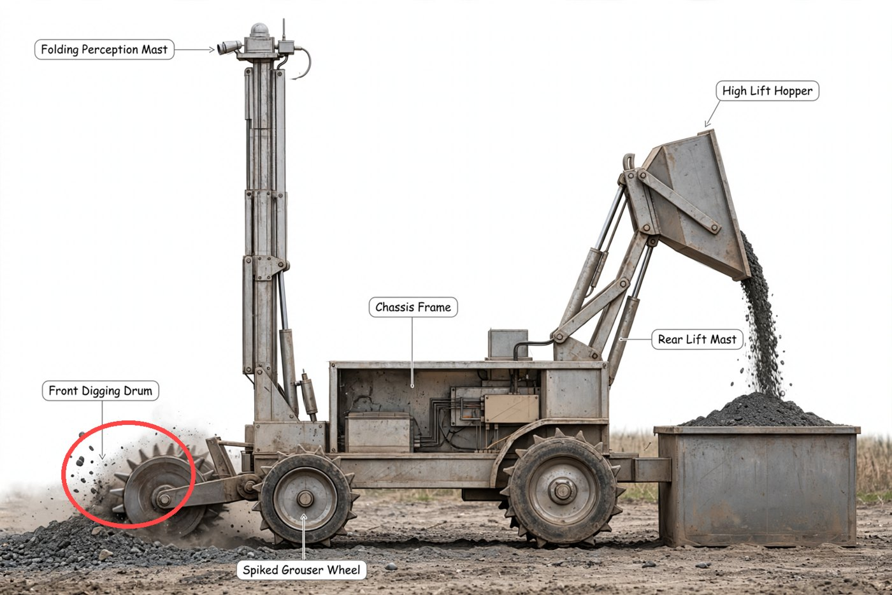

2
Evaluator rejectsre-derives the numbers itself, constraint by constraint
Robot mass at most 60 kg: NOT PROVEN MET - E50 claims 50.6 kg joint total with payload but rests on E48 2.92 kg for ~1 kWh implying 342 Wh/kg, which is off-scale for LiFePO4 pack, so mass integration O1/O4 is unsettled. Fits within 1.0 m long, 0.5 m wide and 0.5 m high at the start: PLAUSIBLY MET as stowed/deployable - frame ~0.95 m and stowable mast/hopper are conceptually compatible with start box with deployed 1.05 m lip, but no dimensioned stowed envelope proof is on the board. Digs Black Point 1 (BP-1) lunar basalt regolith simulant: MET IN PRINCIPLE - E10 45.7 N cutting vs weight/traction of ~40-50 kg chassis and 4.09 kPa contact pressure is the right regime for float and reaction on Earth, single-drum reaction is reactable unlike RASSOR zero-reaction need.
Concept is physically plausible and COTS-buildable in kind - 4x rigid grouser wheels, front transverse drum, central hopper on rear mast, 24 V bus, sealed box, sensor mast, dual radio - no conservation, load-path or signal-path violation. RASSOR prior art does not invalidate it: single drum loses counter-rotating cancellation but 45.7 N reaction vs ~400-500 N weight gives traction ratio >5, and separate hopper + mast to 1.05 m adds tip moment and spill path but is ordinary Earth-gravity engineering, unlike RASSOR drum-as-hopper Z-stand. Re-derivation decides the vote: 341 W x 0.5 h = 171 Wh, not 1000 Wh.
3
Manager diagnoses and rewrites the council's prompttwo-step textual gradient
Root cause: Roles lacked enforced consistency checks (energy equals power times duration versus pack scale; linkage force with friction and useful-vs-input energy; tip arms and stowed fit) and protocol allowed ready vote and proposal carryover without that evidence, so plausible concept reached cap with O1/O2/O4 sound but unclosed.
- applyBattery mass-energy inconsistency: 341W x 0.5h = 171Wh not 1000Wh, 1000Wh/2.92kg = 342Wh/kg vs LiFePO4 pack ~90-110Wh/kg
- applyActuator force with friction through 4:1 linkage unproven (E56 failed) and lift energy 2400J vs ~155J useful (15x overhead)
- applyDump kinematics and tip moment unproven: 0.45m stowed frame to 1.0m lip, 0.50m hopper, 0.30m overhang, tip factor 4.06 vs 7.1 earlier
- applyDimensioned stowed 1.0x0.5x0.5m envelope missing: 300mm wheels + stowed 900mm mast + 1050mm hopper travel, sketches E11/E46/E57 deployed only
Rewritten sections: ## 2. Roles, ## 4. Meeting protocol, ## 5. Criteria
**Decision authority:** mobility architecture, excavator type and its mounting to chassis. Must ensure design drives over BP-1 bed and digs without exceeding mass/size limits.
**Decision authority:** mobility architecture, excavator type and its mounting to chassis. Must ensure design drives over simulant bed and digs without exceeding mass and startup envelope limits. Must articulate traction, flotation, and cutting constraints with cross-domain effects on mass, power, and dump stability. Must cite traction and cutting evidence for wheel-versus-track and tool choice. Must withhold ready while blocking objections owned by others remain open and must condition support for integration on closure of mass and dump proofs owned by others.
**Decision authority:** sensor placement and mast, control architecture, operator interface concept. Must prove operation with no line-of-sight.
**Decision authority:** sensor placement and mast, control architecture, operator interface concept. Must prove operation with no line-of-sight. Must articulate sensing, link, and compute constraints with cross-domain effects on mass, power, and envelope. Must post stowed versus deployed mast geometry and mass and power share for the joint table, keep heartbeat stop-and-hold behavior tied to latency and stopping evidence, and withhold ready until joint envelope and mass proofs close.
**Decision authority:** power system sizing, electronics enclosure and dust mitigation. Must keep mass ≤60 kg and fit within startup envelope.
**Decision authority:** power system sizing, electronics enclosure and dust mitigation. Must keep within mass limit and startup envelope. Must articulate power, energy, and thermal constraints with cross-domain effects on mass and runtime. Must derive sortie energy from budget power and duration, check implied pack specific energy against cited pack-level datasheet value, post corrected pack mass and runtime at full load with evidence, and reconcile with the joint mass total before supporting integration.
**Decision authority:** structural layout, hopper capacity, dump mechanism and bin interface. Ensures carry-and-dump sequence works.
**Decision authority:** structural layout, hopper capacity, dump mechanism and bin interface. Ensures carry-and-dump sequence works. Must articulate structural, mass, and stability constraints with cross-domain effects on mobility, power, and envelope. Must post pivot positions, guide travel, and linkage force including friction for the lift with useful-versus-input energy check, post tip moment arms with overhang and wheelbase reactions for raised load, post a dimensioned stowed sketch showing frame, wheels, stowed mast, and lowered hopper within start limits, reuse joint mass evidence, state why any recompute differs, and reconcile any changed stability margin with stated geometry change.
5
Evaluator acceptsre-derives the numbers itself, constraint by constraint
Robot mass at most 60 kg: met - reconciled total 53.0 kg in E37 with 5.3 kg COTS 480 Wh pack replaces unrealistic 342 Wh/kg claim. Fits within 1.0 m long, 0.5 m wide and 0.5 m high at the start: met - stowed sketch E44 and stowed-plus-deployed sketch E48 show 0.95 m frame, 300 mm wheels, folded 0.45 m mast and lowered hopper inside 1.0x0.5x0.5 m box. Digs Black Point 1 (BP-1) simulant: met - BP-1 friction/density sources E1-E2 with 30 mm shallow drum cut for 39 N reaction vs ~294 N half-weight traction E11-E12 and 9.82 kPa nominal pressure E9-E10.
7
Picture round 1: critic says not faithfulfault regions circled in red

callout: Leader arrow ends on empty dust cloud left/above drum, not on drum metal — expected Leader for Front Digging Drum ends on front spiked drum metal
The image-prompt gradient chose a local fix: only the faulty region is redrawn, then the same fault is checked again.